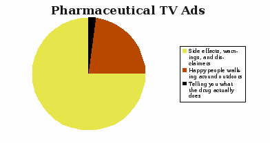

Chart of the content in pharmaceutical TV ads
Although this book is about software, it is worthwhile to look at patents for biotechnology. Michael Crichton recently argued that because companies have been able to patent genes, that are not even invented by man, biotechnology research is threatened. Patenting drugs is one thing; patenting genes is something entirely different.
Against Intellectual Monopoly, by Michele Boldrin and David K. Levine, is an interesting book that discusses many patent and copyright issues. It describes the case for removing patent protection for pharmaceutical companies that produce relatively simple chemicals requiring extensive research and testing. This is a brief summary of their arguments against patent protection for drugs:
Before the pharmaceutical industry came along, the most important chemical industry was for paints and dyes. The authors' study of the history of those companies shows that companies in countries with patent protection had slower rates of innovation. One of the biggest reasons is because “the chemical industry is a classic case of innovation chains – new compounds and processes built on the knowledge of existing ones.” Patents, therefore, get in the way of this.
Countries such as Switzerland and Italy, which for many years didn't have patent protection on pharmaceuticals, still had robust industries. Adding patent protection has actually hurt investments in those countries' pharmaceutical industries.
Pharmaceutical companies spend 13% of revenues on R&D and spend twice as much on marketing and promotion. The cost of R&D is not such a big deal as the drug companies say it is.
Two-thirds of the money spent on pharmaceutical research in the United States comes from the government. This public money is getting turned into private patents.
Many drugs are inexpensive to produce, but drug companies do not make them available to poor countries. If they did, they could be re-imported, hurting their profits in the higher-priced Western markets. Furthermore, the fact that there are such large profits to be made in Western markets has discouraged the development and production of drugs to treat diseases plaguing the poor countries of Africa and Latin America.
A study by the U. S. Centers for Disease Control and Prevention (CDC) found that of the top ten public health achievements of the 20th century in the United States, none was motivated by a desire to patent.
The current patent system perverts pharmaceutical companies and makes them focus on copycat drugs. According to an article from The New Republic:
Money spent on research and marketing of these me-too drugs is money not being efficiently allocated. From Boldrin and Levine:
The largest cost of making new drugs is clinical trials. In some cases this can cost $800 million, and in others $6.5 million. Many of the clinical trials are for me-too drugs, which are a waste. Furthermore, companies paying for clinical trials have a conflict of interest. Boldrin and Levine argue that clinical trials should be paid for by competitive NIH grants. The information about the effects of a drug is a public good and therefore should be paid for by the public.
There are three stages of clinical trials, and so the authors suggest drug companies pay for stage I, but that public money be used for stages II and III. Taking this cost away would allow the drug companies to focus more on fundamental R&D. The biotechnology firms still have a long way to go in their understanding of chemistry and DNA.
Boldrin and Levine don't necessarily suggest that patents be eliminated; even shortening the period of protection would decrease the adverse affects of the above issues. Furthermore, even if we assume that lowering or removing patent protection will hurt investments, the government could give R&D tax credits to offset the decrease. Finally, they argue that too many drugs are available by prescription only, which increases costs and lowers revenues for the pharmaceutical companies.
Congress, in mid-2007, was considering some patent reforms. Some of the changes included changing the patent system to grant them to the first one to file, not the first one to invent, and to limit the amount of infringement damages. Both of these ideas are bad, however, and are just nibbling around the edges. Boldrin and Levine argue that the following reforms should be considered:
Proof that you independently invented something should be a defense against a patent infringement.
Licensing fees for patents should be set close to R&D costs.
Have the government fund clinical trials.
Reduce the number of drugs requiring a prescription.
Decrease the term of patents to four years.
Suspend drug patents in poor countries. To prevent drug re-importation, suspend free trade for medicines.
Boldrin and Levine argue that rather than allowing for the creation of patents, subsidizing a portion of R&D via tax credits is a more efficient allocation of public resources.